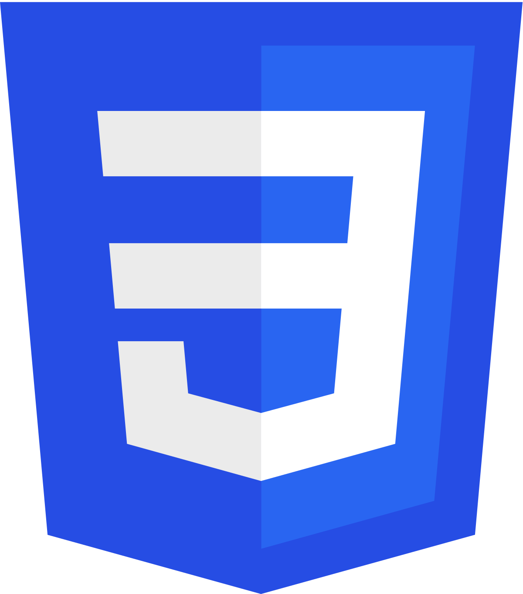
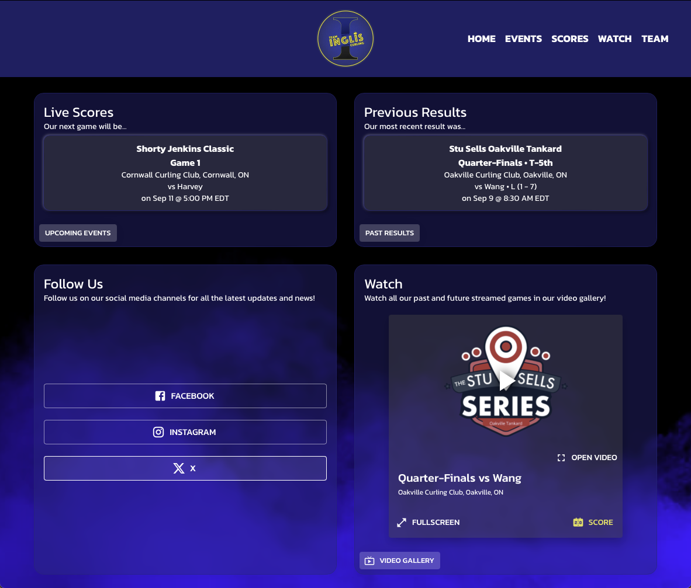
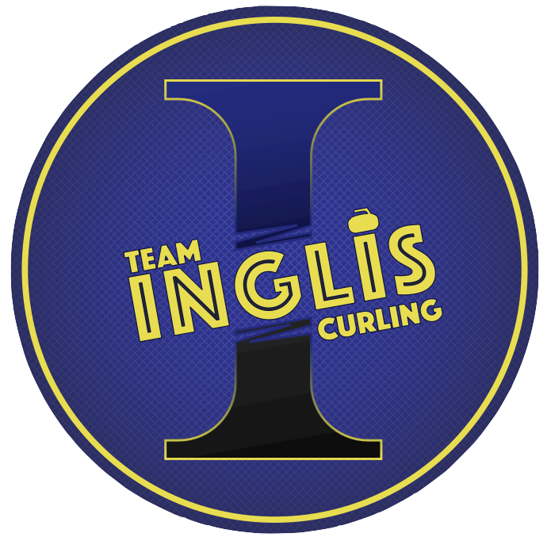

ryanmjgodfrey@gmail.com
ryanmjgodfrey@gmail.comProjects
ryangodfrey.tech

Purpose
This website was created to serve as a static gallery of projects that I have created or contributed to significantly. It is also intended to "kill two birds with one stone", and provide the opportunity for you to learn a bit about my background as a growing software engineer.
Execution
This website was created using a majority of pure HTML5 and CSS, with a little javascript sprinkled in for some flare. All code is viewable through your browser developer tools, as well as on my GitHub. A majority of the typography is the Kanit font, while the main titles ("About", "Projects", "Stack") are in the Archivo Black font.
Inspiration
The style of this website was inspired by my interest in the neo-brutalism UI design style. I tried to stick with a muted RGB colour palette, while including some elements that are common in UI development.


Purpose
These web applications were created to serve as a globally available, and accessible platforms to access everything that has to do with a specific curling team.
Execution
This website was created using the React framework as a foundation, with Material UI elements for the front-end. Google Firestore and Analytics are used throughout the application to provide real-time data to the user and analytics information for performance monitoring.
Inspiration
The inspiration of this application came from my first-hand knowledge of the inadequacies with the current landscape of curling websites and platforms, and the possibilities to grow the viewer base. The intention with this narrow-scope application is to expand the functionalities to a point that numerous teams can utilize the platform and grow the audience of the sport.